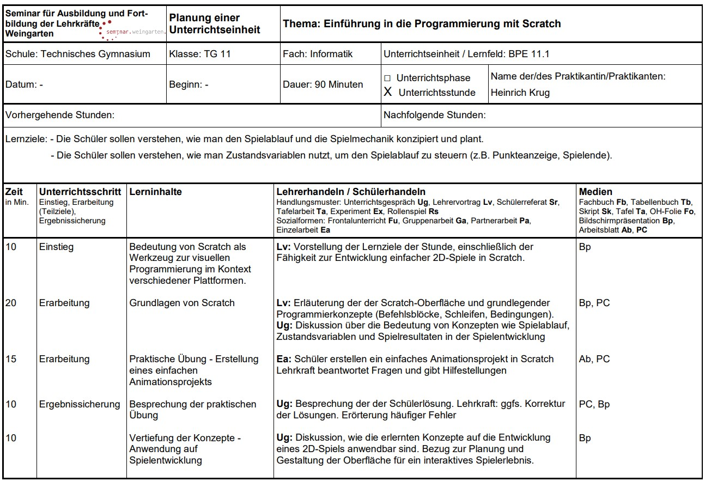
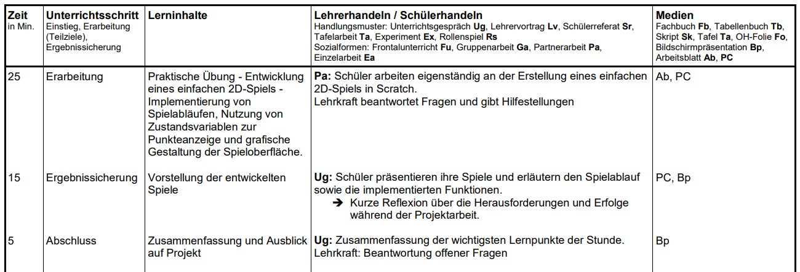

16.07.2024 - Präsentation
Entwicklung und Bewertung einer Programmierprojekt-Einheit für Schüler mit Scratch
Es soll eine interaktive Unterrichtseinheit für das Fach Informatik geplant werden, in der die Schüler in Zweiergruppen ein Spiel mit Scratch entwickeln. Die Aufgabe umfasst die Konzeption des Spiels, die technische Umsetzung, die detaillierte Dokumentation und grafische Darstellung des Spielablaufs. Ein wesentlicher Teil Ihrer Planung beinhaltet die Erstellung eines Anforderungskatalogs und eines Bewertungsbogens, die als Grundlage für die Bewertung der Schülerarbeiten dienen.
1. Entwicklung eines Anforderungskatalogs
Technische Anforderungen:
Die technischen Anforderungen an das Programmierprojekt
soll die Nutzung von Programmierkonzepten beinhalten.
Variablen:
Die Schüler sollen mindestens zwei Variablen zur Speicherung von Spielständen oder Spielzuständen nutzen.
Es muss gezeigt werden, wie Variablen durch Ereignisse im Spiel (z.B. das Sammeln von Gegenständen oder
das Vermeiden von Hindernissen) verändert werden.
Operatoren:
Einsatz von Operatoren zur Berechnung von Punkteständen oder zur Steuerung des Spiels. Es sollen
Vergleichsoperatoren (>, <, ==) eingesetzt werden, um Entscheidungen im Spiel zu treffen, z.B. ob ein
Spieler ein bestimmtes Ziel erreicht hat.
Schleifen:
Die Schüler müssen mindestens eine Schleife nutzen, um wiederkehrende Aktionen im Spiel zu programmieren.
Nutzung von Schleifen zur wiederholten Ausführung von Spielmechaniken oder Animationen.
Bedingungen:
Nutzung von bedingten Anweisungen (if-else) zur Entscheidungsfindung im Spiel (z.B. Kollisionserkennung, Spielende).
Objektorientierung:
Erstellung und Steuerung von mindestens zwei verschiedenen Spielfiguren oder Objekten.
Diese sollen in Form von Kollisionen, Verfolgungen oder durch das Sammeln von Gegenständen miteinander interagieren.
2. Erstellung eines Bewertungsbogens
| Bewertungskriterium | Gewichtung | Erfüllungsgrad | Punkte |
|---|---|---|---|
| Technische Anforderungen | |||
| Verwendung von Variablen | 10% | ||
| Einsatz von Operatoren | 10% | ||
| Implementierung von Schleifen | 10% | ||
| Nutzung von Bedingungen | 10% | ||
| Steuerung von Objekten | 10% | ||
| Kreative Anforderungen | |||
| Originalität des Spielkonzepts | 10% | ||
| Benutzerfreundlichkeit | 10% | ||
| Grafik und Design | 10% | ||
| Dokumentation und Präsentation | |||
| Spielablaufbeschreibung | 5% | ||
| Technische Dokumentation | 10% | ||
| Grafische Darstellung | 5% | ||
| Gesamtpunkte | 100% | ||
3. Planung einer Unterrichtseinheit
Grundlage für die Planung dieser Einführungsstunde in die Programmierung mit Scratch bildet die Bildungsplaneinheit 11.1 aus dem Bildungsplan für technische Gymnasien in Baden-Württemberg. Konkret geht es in diesem Fall um einen Wahlbereich innerhalb des Informatikunterrichts der Eingangsklassen. Dieser Wahlbereich behandelt die Entwicklung und Implementierung einfacher 2D-Spiele anhand bestimmter Entwürfe oder Vorgaben. Die Schüler planen den Spielablauf und implementieren das Spiel mithilfe von Entwicklungsumgebungen und Frameworks.
 4. Praktische Umsetzung mit Scratch
Für die praktische Umsetzung eines Spiels in Scratch wurde sich für die Erstellung eines sogenannten Obstkorbspiels entschieden. Dabei soll mit einer kleinen Schüssel herabfallendes Obst gefangen werden. Für jeden gefangenen Apfel gibt es einen Punkt. Wenn man statt einen Apfel einen Gegenstand auffängt erhöht sich dagegen die Anzahl der Versuche. Ab einer bestimmten Anzahl an Versuchen ist das Spiel beendet.
Bezug zum Anforderungskatalog
Die technischen Anforderungen wurden alle erfüllt. So wurden die Variablen "Punktzahl" und
"Versuche" angelegt. Operatoren wurden beispielsweise genutzt, um die maximale Anzahl der zulässigen
Versuche zu definieren. Auch wurden Schleifen genutzt, sodass es einen kontinuierlichen Zustrom von
herunterfallenden Äpfeln und Saxophonen gibt. Auch wurden Bedingungen in Form von Start- bzw.
Abbruchbedingungen formuliert, die das Eintreten von unterschiedlichen Szenarien ermöglichen. Da
sich die Schüssel mittels Pfeiltasten nach links und rechts bewegen lässt, wurde zudem die Anforderung
zur Steuerung von Objekten erfüllt.
Im Bezug auf die kreativen Anforderungen konnten die Anforderungen nicht vollumfänglich
erfüllt werden. Das Spielkonzept ist bereits weit verbreitet und insbesondere dieses Spiel entstammt
einer Übungsaufgabe aus einem Schulbuch. Die Benutzerfreundlichkeit ist nur teilweise gegeben. So ist
die Steuerung recht simpel gehalten, jedoch fehlt diesem Spiel eine Art Einführung für den Spieler. Die
Grafik und das Design sind standardmäßig der Bibliothek von Scratch entnommen und sind daher nur bedingt
kreativ.
potentielle Herausforderungen und Lösungsansätze
Potentiell herausfordernd kann aus Sicht der Schüler den Überblick zu wahren, welche Skripte
zur Programmierung benötigt werden. Auch das Wechseln zwischen den einzelnen "Sichten" wie dem Reiter
Skripte und den einzelnen Figuren. Irritierend kann das Layout der Scratch Benutzeroberfläche wirken,
wenn man zwischen der Online-Version und der Offline-Version wechselt, da diese von der Optik leicht
voneinander abweichen.
Mögliche Lösungsansätze im Bezug auf die erwähnten potentiellen Herausforderungen wäre, das die
Aufgaben, die man den Schülern am Anfang der Einführung mit Scratch gibt, klar vorgeben welche Bausteine
verwendet werden müssen. Beim Wechsel der einzelnen Sichten innerhalb von Scratch wäre eine entsprechende
Live-Demonstration der Lehrkraft samt den entsprechenden Erläuterungen hilfreich. Bei der zuletzt erwähnten
potentiellen Herausforderung empfehlt es sich bereits zu Beginn festzulegen mit welcher Version von Scratch
gearbeitet werden soll.
Fazit
Der Anforderungskatalog deckt alle wesentlichen technischen
(Variablen, Operatoren, Schleifen, Bedingungen, Objektorientierung) und kreativen Aspekte
(Originalität, Benutzerfreundlichkeit, Grafik und Design) ab, die für die Entwicklung eines
Scratch-Spiels relevant sind. Der Schwierigkeitsgrad der Aufgaben bezogen auf den Anforderungskatalog
sollte der Kompetenzstufe einer Eingangsklasee eines technischen Gymnasiums angemessen sein.
Dies bedeutet, dass die Anforderungen herausfordernd genug sind, um das Lernen zu fördern, aber nicht überfordernd, um Frustration zu
verursachen. Gerade vor dem Hintergrund das an einem beruflichen Gymnasium die Schüler mitunter
ein unterschiedliches Vorwissen im Bezug auf Informatik haben können sollte das Anforderungsniveau
entsprechend gewählt werden.
Die didaktische Planung integriert die Bildungsplaninhalte klar und effektiv, indem sie
die Programmierkonzepte durch Beispiele, Übungen und praktische Anwendungen vermittelt, um so
den Zielen der Bildungsplaneinheit gerecht zu werden. Komplexe Themen sollten in leicht verständliche
Einheiten aufgeteilt werden, die den Schülern einen schrittweisen Aufbau ihres Wissens ermöglichen.
Didaktische Reduktion bedeutet auch, irrelevante Details zu minimieren und den Fokus auf die
wesentlichen Konzepte zu legen, die für die Entwicklung eines Scratch-Spiels wichtig sind. So
wird beispielsweise bei Scratch auf die Programmierung mittels Code verzichtet und stattdessen
mit Bausteinen gearbeitet.
In der praktischen Umsetzung wurden die im Anforderungskatalog definierten technischen Konzepte
(Variablen, Schleifen, Bedingungen usw.) korrekt und effektiv genutzt. Neben der Technik sollte der
Prototyp auch kreative Aspekte wie Originalität, Benutzerfreundlichkeit und Design-Qualität berücksichtigen.
Dies ist bei der Erstellung nur teilweise gelungen.
Wie bereits erwähnt wird der Prototyp den technischen Anforderungen gerecht. In Bezug auf die kreativen
Aspekte gibt es viel Potential. So könnte man neben einem Saxophon auch noch andere Gegenstände implementieren.
Auch zeigt sich das Spielkonzept monoton. Hierbei könnte man noch weitere Level entwickeln, sodass man
dem Spiel mehr variation Verleihen kann. Persönlich sehe ich kritisch wie kreative Anforderungen
bewertet werden sollen. Kreativität ist zu einem gewissen Maß auch von subjektiven Meinungen
geprägt, wohingegen die technischen Anforderungen auch objektiv nachvollziehbar sind.